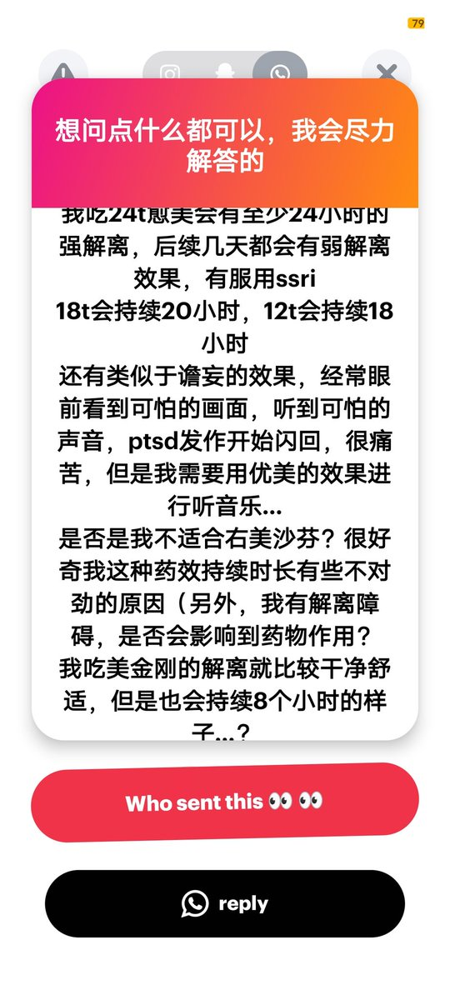

Shikieiki Yamaxanadu
@_Shikieiki
鉴于解离障碍患者通常是谷氨酸系统失调 这点很可能是影响解离剂持续时间的主要原因 所以右美的持续时间才会比较久
我也很喜欢右美的音乐增强)
另外如果喜欢解离的话
可以尝试低剂量愈美+美金刚吧)
2/2 END

Shikieiki Yamaxanadu
@_Shikieiki
24小时强解离是有点离谱了 可能是ssri影响到酶功能 进而影响到右美的代谢了 但是一般也不会这么久)
视听幻觉对右美来说比较常见 我也不知道怎么消除(有人追求的就是幻觉)
我也不懂为什么你的愈美会持续这么久 抱歉了 不过美金刚倒是在正常/稍短的持续时间内 而且美金刚的解离也确实比较纯
1/2 https://t.co/9rVTj2g21B